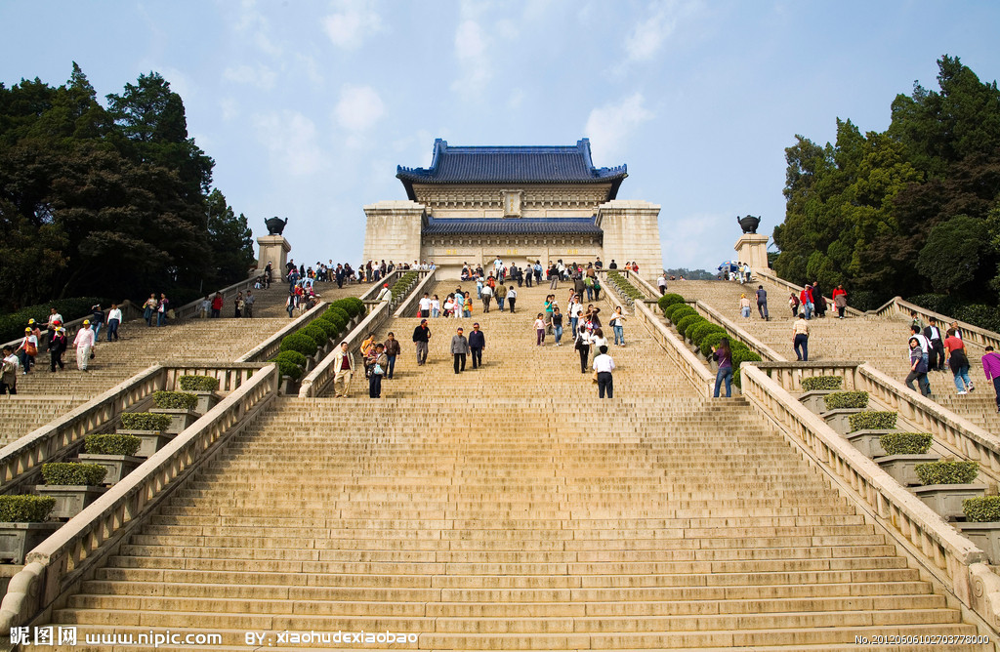

中山陵

中山陵地处于南京市东郊紫金山南麓，是中华民国国父、中国民主革命先行者孙中山的陵墓。 1961年成为首批全国重点文物保护单位，2007年成为首批国家5A级景区。中山陵前临苍茫平川， 后踞巍峨碧嶂，气象壮丽，音乐台、光化亭等纪念性建筑，众星捧月般环绕在陵墓周围， 在型体组合、色彩运用、材料表现和细部处理上均取得极好的效果，既有深刻的含意，又有宏伟的气势，被誉为“中国近代建筑史上第一陵”。